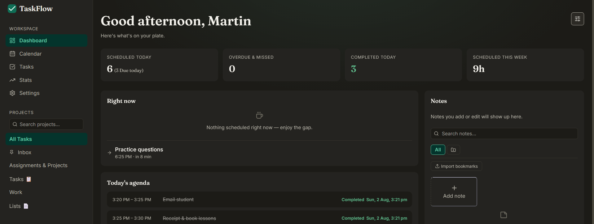
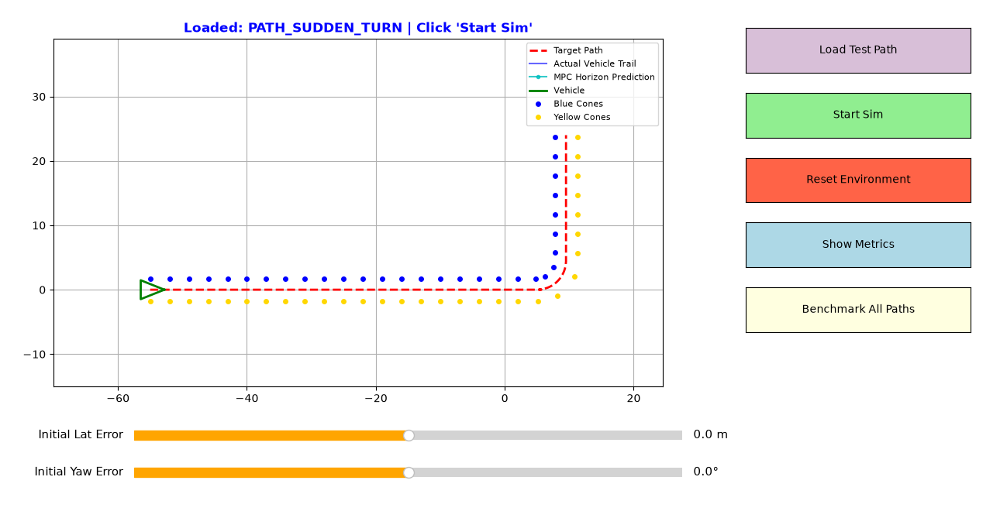
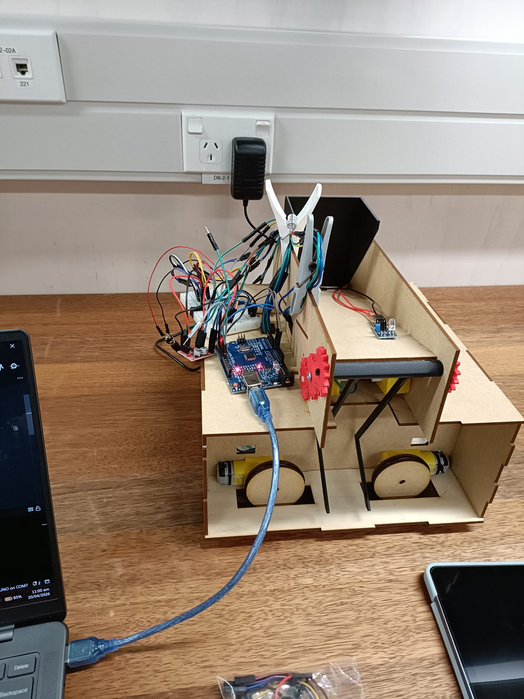

Qicong (Martin) Jin
Mechatronics Engineering Student at the University of Auckland
Mechatronics combines mechanical, electrical and computer systems in one field. I chose it because building mechanisms, designing circuits and writing the logic that controls them felt like parts of the same problem, so there was no need to pick a single discipline.
About this site: a running log of engineering projects (robots, CAD, control systems and software) and of my experience in the F:SAE:47 autonomous team. Each entry records how a design became a working implementation. The site is still a work in progress, so a few older write-ups have less detail than the rest.
Featured Projects

TaskFlow Auto-Scheduler
A task manager and time-blocking calendar that schedules tasks around deadlines and free time, with board, Gantt and dashboard views.

FSAE MPC Path Tracking Simulator
A closed-loop MPC simulator and a CMA-ES weight tuner for F:SAE autonomous path tracking.

Mini Warman Robot Build
A robot that carries tennis balls across the Mini Warman competition course, built and prototyped by a team.
Project Timeline
Music Player App with Cloud Sync
SeptemberAn Android music player in which every subfolder becomes a playlist, with Cloudflare-backed sync that keeps the library identical across devices.
Harvest Ledger Nutrition Tracker
SeptemberA nutrient planner that finds combinations of everyday foods that meet daily macronutrient and micronutrient targets.
TaskFlow Auto-Scheduler
JulyA task manager and time-blocking calendar that schedules tasks around deadlines and free time, with board, Gantt and dashboard views.
CV Editor Resume Builder
JulyA structured, browser-only CV builder with PDF export, built with React.
Workshop Practice
JulyA university workshop course covering milling, turning, welding and fabrication. It produced a machined hammer and a brushless DC motor build that was soldered, 3D printed and laser cut.
FSAE MPC Path Tracking Simulator
June - JulyA closed-loop MPC simulator and a CMA-ES weight tuner for F:SAE autonomous path tracking.
F:SAE Autonomous Research
MayResearch into sensor fusion strategies for autonomous perception systems.
Mini Warman Robot Build
March - MayA robot that carries tennis balls across the Mini Warman competition course, built and prototyped by a team.
Mini Warman CAD Design
MarchA full 3D model and design documentation for a ball-transportation robot.
VEX Autonomous Robot
March - MaySensor feedback and PI controllers for the autonomous navigation of a VEX robot.
Grocery Tracker App
Jan - MarA native Android app for tracking household inventory.
Functional Lamp CAD
AprilA custom desk lamp with integrated mechanical joints, designed around assembly constraints and form.
Brew & Bean Coffee Hub
March - DecA full-stack web application with a real-time database and Firebase authentication.
Career Timeline
This section records engineering experience outside coursework. Each entry describes what the team did, because the work belongs to the whole team and not to one member.
F:SAE:47 Autonomous Team
May 2026 – CurrentAutonomous Team Member, University of Auckland Formula SAE
The autonomous group of F:SAE:47 builds the software, the hardware and the electronics that connect them, so that a vehicle can drive a track marked by blue and yellow cones without a driver. This entry describes the work done during my time on the team. The footage below shows the team's go-kart on test tracks.